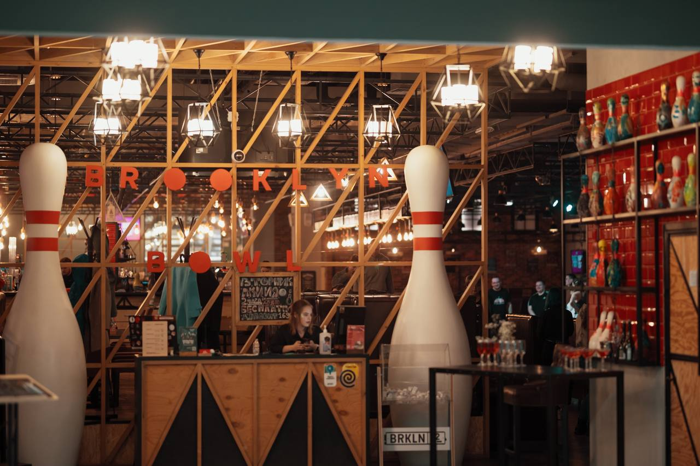
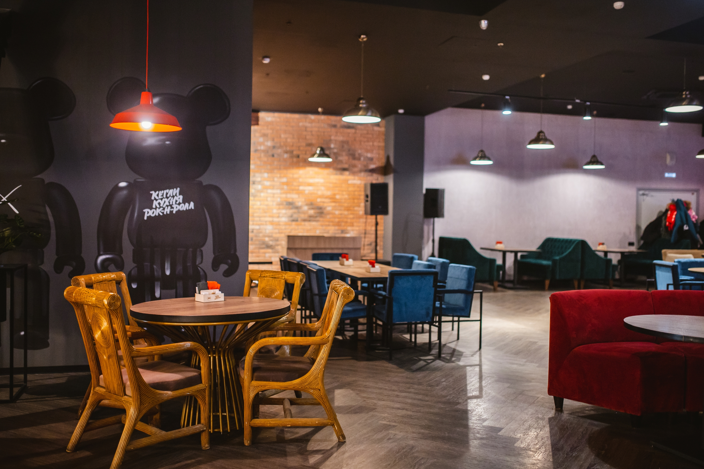
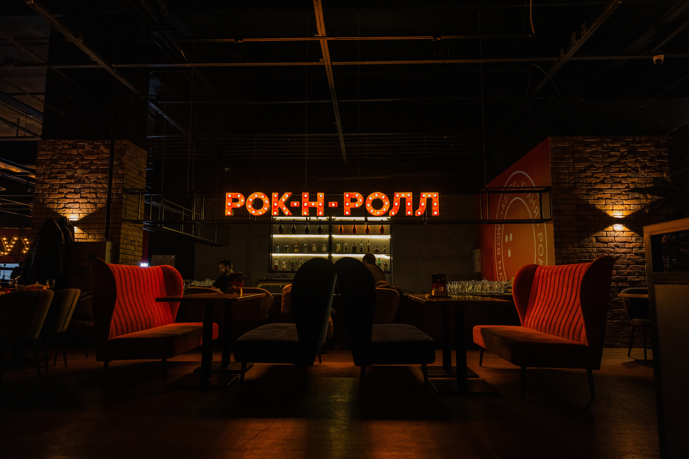
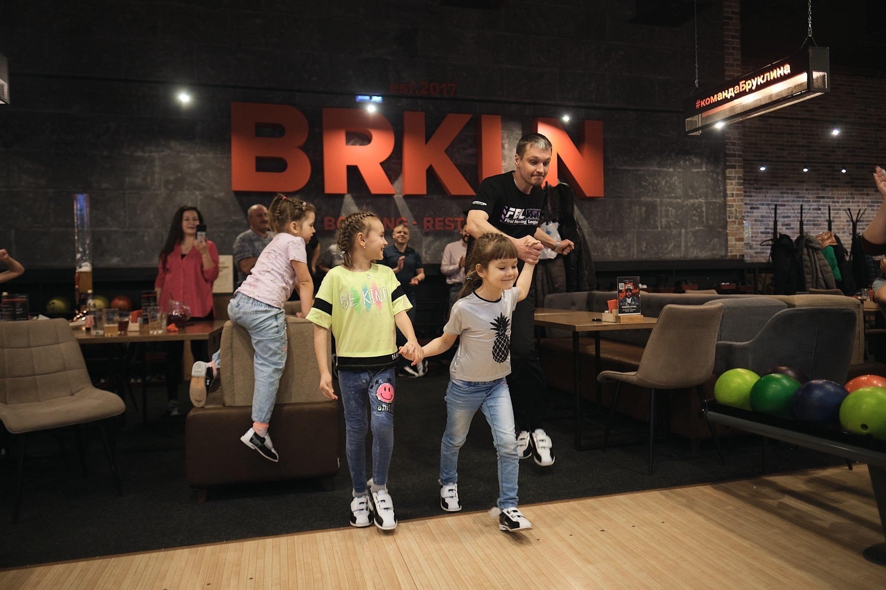
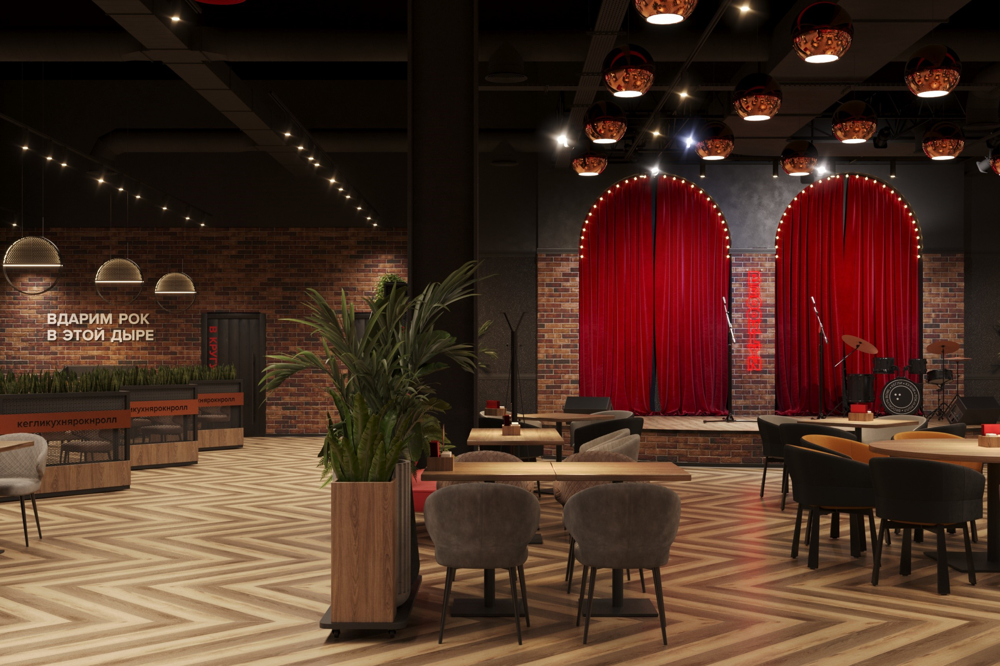
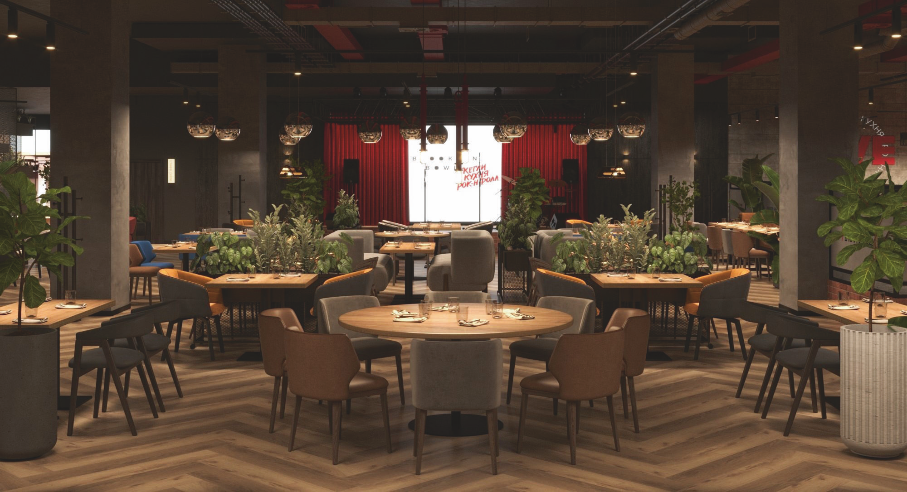
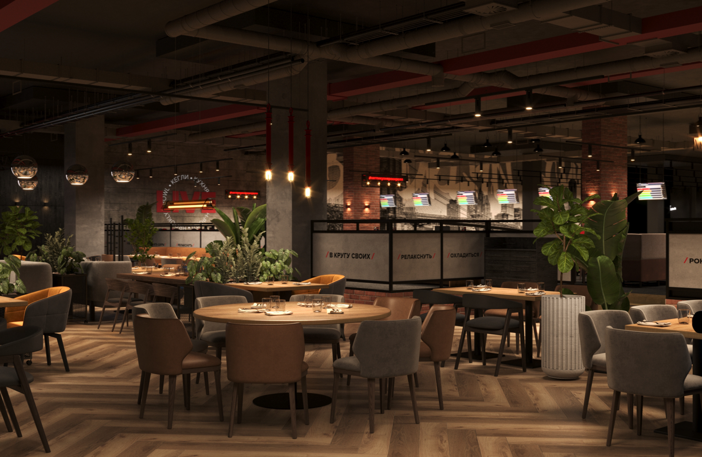

Кегли · Кухня · Рок-н-ролл
Кегли · Кухня · Рок-н-ролл
ВЫБЕРИТЕ ГОРОД
Мы играем
Мы играем
в семи городах
Выберите город — покажем дорожки, кухню и афишу именно вашего клуба.

Тюмень
3 точки
СитиМолл — Тимофея Чаркова, 60
Остров — Федюнинского, 67
Колумб — Московский тракт, 118
+7 (3452) 22-61-30

Ижевск
2 точки
Петровский — ул. им. Петрова, 29
Матрица — ул. Баранова, 87
+7 (341) 270-84-40

Сургут
1 точка
ТРЦ «Аура» — Нефтеюганское шоссе, 1
+7 (346) 274-49-60

Нижневартовск
1 точка
ЮГРАМолл — улица Ленина, 15П
+7 (346) 648-22-59

Самара
2 точки
Гудок — Красноармейская, 131
ЛЕТАУТ — Московское шоссе 18 км, 23
+7 (846) 255-10-14

Москва
2 точки
Северное Сияние — бул. Дмитрия Донского, 1
Красный Кит — Шараповский пр-д, 2, Мытищи
+7 (499) 490-33-66

Санкт-Петербург
1 точка
ТРЦ «Июнь» — Индустриальный проспект, 24
+7 (812) 760-80-95